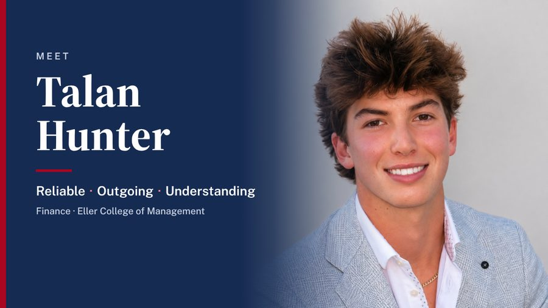
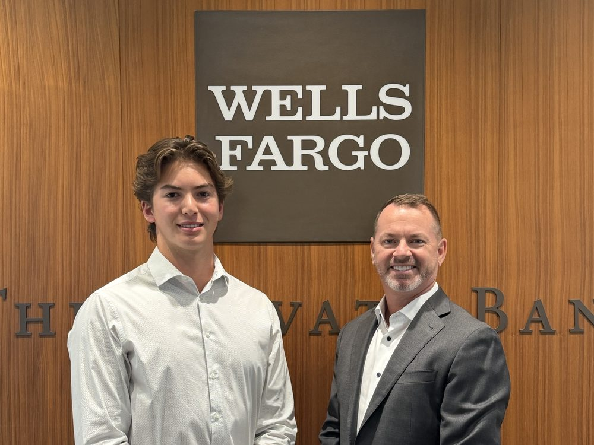
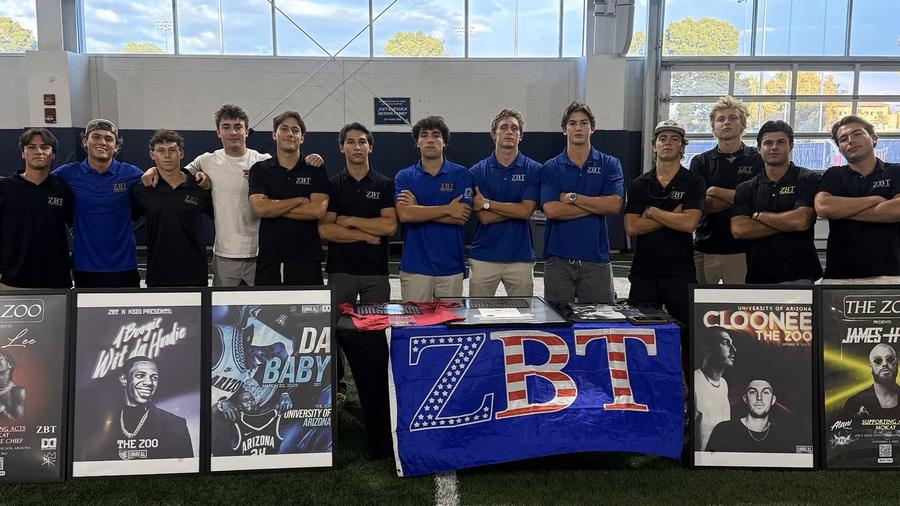

Reliable
Prepared, consistent, and always following through.If I tell a teammate or a client I'll do something, it gets done on time. I'd rather over-prepare for a meeting than walk in unsure.
Respondents chose "Driven" and "Hard-Working"
Open to Summer 2027 wealth management internships
Finance · Eller College of Management · University of Arizona
A finance student who believes good advice starts with listening, and who shows up prepared every time.
I built this site for wealth management recruiters hiring Summer 2027 interns. It covers why I chose this field, what I've done so far, what the people I've worked with say about me, and how I've grown along the way.
Explore
Who I am, why I chose wealth management, and what others say about me.
Read → 02How each role shaped me, from my first job to Wells Fargo, and where I'm growing next.
Read → 03Every role in depth, plus my education, credentials, and skills.
Read → 04My persona video and the projects I'm proudest of.
See work →About me
I grew up in San Diego, and finance has been part of my life for as long as I can remember. My parents met while working at a bank, so conversations about money, saving, and serving customers were part of growing up. Today I'm a Finance major at the University of Arizona's Eller College of Management, building a career in wealth management, where the two things I enjoy most come together: working with numbers and working with people.
This past summer I interned at Wells Fargo Advisors in San Diego. Sitting in on client meetings showed me what this career looks like day to day, and it confirmed that this is the work I want to do.
At school I stay involved. I've held two leadership roles in my fraternity, Zeta Beta Tau, I analyze public companies with Phi Gamma Nu, and I spent a semester building my client conversation skills in the Eller Professional Sales Club.
Outside of class I'm usually outdoors: surfing, hiking, snowboarding, or fishing in Baja. I also train jiu-jitsu, lift, and I'll never turn down a Rubik's Cube.
Why wealth management
I've worked in retail, sales, recruiting, and a wealth management office. Wealth management is where everything I enjoy comes together.
Every portfolio stands for someone's goals: a retirement, a child's education, a family business. Helping people reach those goals is the part of the job I'm most excited about.
Clients notice when you've done your homework. Reviewing an account before a meeting, following up when you said you would, and keeping records organized all build trust over time. Being prepared and consistent is how I already work.
Client relationships in this field can last decades. I like that the work rewards patience and steady growth. Passing the SIE exam was my first step, and I want to keep building my knowledge and credentials from here.
My professional persona
These are the three qualities I want every client and teammate to experience. Here is how each one shows up in the way I work, and what my survey respondents said.
If I tell a teammate or a client I'll do something, it gets done on time. I'd rather over-prepare for a meeting than walk in unsure.
Respondents chose "Driven" and "Hard-Working"
I'm comfortable walking into a room of strangers and starting a conversation. Meeting new people is one of my favorite parts of any job.
4 of 5 respondents chose "Outgoing"
I try to understand where someone is coming from before I share an opinion. That matters most when a client is talking about their family's money.
4 of 5 respondents chose "Empathetic"
In others' words
Talan brought great energy to the office and a sharp mind to the work. He found faster, better ways to get things done, and we really enjoyed having him.
"Talan is well rounded, driven and a natural born leader. He knows how to get stuff done and be serious, but he's also very social and easy to talk to."
Based on my survey responses: energetic, people-focused, and confident sharing ideas.
Words chosen by the people I've worked with, including my Professional Reputation Survey respondents. Larger words were chosen more often.
The case for evolution
All five of my survey respondents described me as growth-oriented. Each step below added a skill I now use with clients and teams.
San Diego, CA
My parents met while working at a bank. Banking was part of our family's story before I was even born, and I grew up hearing how much trust people place in the person handling their money.
Trust is the real currency in finance.
Student Intern, Keg N' Bottle · San Diego
I managed the online product listings for a retailer with five stores. Pricing, positioning, and inventory stopped being textbook terms and became daily decisions with real revenue attached.
Small details add up to big results.
Eller Professional Sales Club · Tucson
Weekly mock calls taught me discovery, consultative pitching, and objection handling. Campus sales competitions taught me to stay calm and curious under pressure.
A good pitch starts with a good question.
Head Academic Chair, Zeta Beta Tau · Tucson
For the first time, other people's results depended on me. I built grade checks, study sessions, and planning meetings for members who were falling behind, and I watched the chapter's grades climb.
Leadership is following through when no one is checking.
Phi Gamma Nu · VP of Recruitment, Zeta Beta Tau
I was selected for Phi Gamma Nu, where I analyze public companies every week. Two months later I was elected VP of Recruitment and found myself having hundreds of first conversations.
Understanding people matters as much as understanding numbers.
Summer Analyst Intern, Wells Fargo Advisors · San Diego
One day an 80-year-old client came into the office frantic and confused about what the market was doing. I sat in as the advisor calmly walked him through it. Within minutes the client had relaxed and felt back in control. That was the moment I understood what this job really is: helping people feel secure about their future, especially when things feel uncertain. It was the most inspiring thing I saw all summer, and it's the kind of advisor I want to become.
When things feel uncertain, calm is the most valuable thing an advisor can offer.
My feedback showed me a pattern. When I care about something, I tend to put my head down, grind, and try to do everything myself. I'm learning to open up more in teams, share ideas earlier, and ask questions sooner. Asking turns out to be the faster way to get it right.
I want to be a financial advisor with clients who trust me the way that 80-year-old client trusted his advisor, and to be starting a family of my own somewhere on the coast. Everything I'm doing now, from the SIE exam to this internship search, is a step toward that.
I'm not the same person I was at my first job, and I don't plan to be the same person a year from now. Every role has made me better, and I'm looking for the next one that will.
Experience in depth
A closer look at each role: what I was responsible for, what I accomplished, and what it taught me.
My summer at Wells Fargo Advisors put me inside a working wealth management practice. I joined a four-person team that managed more than $750 million in client assets and supported the advisors with operations, client service, and meeting preparation.
The technical work only matters when the client understands and trusts it. The best meetings I sat in on felt like conversations, not presentations, and the advisors asked far more questions than they answered.
Phi Gamma Nu is a professional business fraternity at the University of Arizona. I was one of 19 people selected from more than 200 applicants, based on finance aptitude and analytical performance.
Studying a new company every week has made me faster at working through financial information and better at explaining an investment idea in plain language, which is exactly what clients need from an advisor.
As Vice President of Recruitment, I owned the process that decides who joins a chapter of more than 130 members.
Recruitment is a relationship job. I had hundreds of first conversations, learned to remember people and what mattered to them, and had to judge fit honestly. Those are the same skills it takes to win and keep clients.
As Head Academic Chair, I was responsible for the academic performance of more than 130 members.
People respond to structure and encouragement, not pressure. Checking in regularly and making it easy to ask for help changed results more than any rule did.
The Eller Professional Sales Club trains students in professional selling through weekly workshops and competitions.
I still use the discovery approach from this club in every first conversation: understand what someone needs before offering anything.
My first business role, at a retailer with five locations in San Diego.
It was my first look at how pricing and presentation turn into real revenue, and how a business actually makes money.
Two summers coaching basketball at a two-week youth camp. Working with kids of every attitude taught me patience and how to explain something clearly to someone who doesn't understand it yet, which is a big part of an advisor's job.
Two summers on a construction team doing backyard remodels. Long days of physical work taught me to show up early, work as a crew, and finish the job right.
I bought and resold sneakers until I was 15. It taught me sales at a young age: reading what buyers want, pricing, and closing a deal.
Education & credentials
My Finance coursework gives me the technical base, and I've paired it with hands-on experience through Phi Gamma Nu, the Eller Professional Sales Club, and my internship at Wells Fargo Advisors.
Skills & interests
Work samples
A short story behind each project: the challenge, what I did, and how it turned out.

Walk with me through Eller, my Wells Fargo internship, and the people I lead. The video shows the three traits that define how I work: reliable, outgoing, and understanding.
Watch on YouTube →
My Wells Fargo Advisors team served more than 500 clients, and every one of them was getting the same level of outreach. The advisors needed a better way to focus their time. I sorted the full client book into service tiers and supported the outreach that followed, so each group got the right level of attention. The team moved to tier-based outreach and a more efficient workflow.

When I became VP of Recruitment, the chapter was counting on me to bring in a strong new class that fit its values. I ran weekly events and marketing, met and evaluated more than 800 candidates against our core values, and worked with chapter leadership to build a new-member process. We welcomed more than 30 new members.
As Head Academic Chair, I noticed a number of our 130+ members were falling behind in class. I set up regular grade checks, organized study sessions, and held calendar planning meetings with members who needed help catching up. In one semester, the chapter's average GPA rose 20%.
Contact
If you're hiring for a wealth management or financial advisory internship, I'd love to hear from you. Email is the fastest way to reach me.